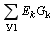
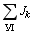

Метод узловых напряжений (МУН) базируется на 1ЗК и обобщенном законе Ома. В методе узловых напряжений за вспомогательные расчетные величины принимают т. н. узловые напряжения Uk0 - напряжения между каждым из узлов схемы и выбранным базисным узлом (его будем обозначать цифрой "0"), потенциал которого принимают равным нулю. Число уравнений для расчета схемы по МУН: NМУН = У - 1.
Для каждого узла, кроме базисного, составляют уравнение по 1ЗК. В полученных уравнениях токи ветвей, присоединенных к базисному узлу, выражают через узловые напряжения и проводимости посредством обобщенного закона Ома: |
| Ik =
(Ek - Uk0)/Rk =
(Ek - Uk0)Gk, |
(2.16) |
где Gk = 1 / Rk - проводимость k-й ветви.
| Ikj =
(Ekj - Ukj)/Rkj =
(Ekj - Uk0 + Uj0 )Gkj, |
(2.17) |
где Ukj = Uk0 - Uj0 (правило
индексов, т. к. Ujk = Uj0 - Uk0); Gkj = 1/Rkj -
межузловая проводимость. После группирования членов при соответствующих
узловых напряжениях и переноса EkGk и
токов Jk источников
тока в правую часть, образуется система уравнений относительно
неизвестных узловых напряжений. Структура
каждого уравнения одинаковая, например, уравнение относительно
узла 1:
| G11U10 - G12U20 - ... - G1nUn0 =  +  |
(2.18) |
где G11 = G1 + G2 +
... + Gn - собственная
проводимость узла 1, равная сумме проводимостей
ветвей, присоединенных к узлу 1 (проводимости
ветвей с ИТ не учитываются, т. к. Gj =
1/Rj =
0 (Rj = )); |
G12 , ... , G1n – межузловые проводимости; |
-
алгебраическая сумма произведений ЭДС ветвей, присоединенных
к узлу 1, на проводимости этих ветвей; причем
со знаком плюс (минус) записываются произведения, если
ЭДС направлена к узлу 1 (от узла 1); |
-
алгебраическая сумма токов источников тока ветвей, подключенных
к узлу 1; причем токи Jk записываются
со знаком плюс (минус), если они направлены к узлу 1 (от
узла 1); |
 +  - узловой ток узла 1. |
Решив систему уравнений относительно узловых напряжений, определяют межузловые напряжения и токи ветвей, посредством соотношений, приведенных выше. |
Ограничения. Метод узловых напряжений не применим (без предварительного преобразования) к схемам с индуктивно связанными элементами и к схемам, содержащим несколько ветвей только с идеальными источниками напряжения (без пассивных элементов), не соединенных с базисным узлом. |
Для расчета по МУН схем, содержащих ветви только с идеальными источниками напряжения, необходимо выбрать в качестве базисного узла один из полюсов идеального ИН. Тогда напряжение узла, к которому присоединен второй полюс этого ИН, равно его ЭДС. Остальные идеальные ИН, не присоединенные к базисному узлу, нужно перенести в ветви с пассивными элементами. При этом число необходимых уравнений для расчета цепей по МУН уменьшится на число n ветвей только с идеальными ИН, т. е. |
NМУН = У - 1 - n. |
|